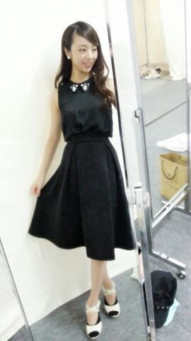
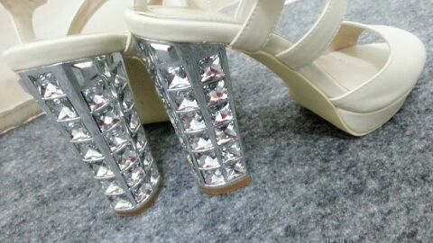

| 2014/07 15 Tue | ～投票よろしくお願い致します～\ ろってぃ− / |
おはにょん

まに or ろってぃ−やよ..*
もうすぐ始まる渋谷での
アンダーライブのユニットコーナーは
皆さんらのリクエストとゆう形です。
そして握手会などでろってぃ−ユニットどの曲でリクエストしたらいいー？っていっぱい聞かれるので、、、
やっぱり〜、
『 渋谷ブルース 』『 コウモリよ 』『 孤独兄弟 』です♪
よろしくお願い致します。
とゆうか 今日の17時までみたいなので、わりと早急ですね \*´`*/笑
日曜日は、横浜にて個別の握手会がありました..*
4部と5部の参加となりました..*
来てくださった皆様、本当にありがとう !!!
勉強やお仕事など 忙しくて行きたかったけど、行けなかった.って方もありがとう。
そして、今回も私服で握手会*.゜
えい ..*

どうですか〜 ヾ(・o・*)シ？
『うわ〜綺麗な色〜
 』って思って購入した洋服なのです..* あと エメラルドグリーンカラーのお靴..*
』って思って購入した洋服なのです..* あと エメラルドグリーンカラーのお靴..*
あとね まにの大好きな帽子.
この私服は かずみんに『可愛い〜』って言ってもらったので嬉しゅうキモチなんです..* ひなにも言ってくれた..*
確かに、かずみんは ブルー系/エメラルドグリーンが大好きな人間やもんな、、、
あっ、そーいや、昨日 字も褒めてくれた。まには 嬉しゅうキモチや。
そして、もう１つの私服はこちら..*
大好きなピアスもつけ、首もと少しキラッとさせて、全身 黒でシックな感じです..* 黒ってぃ〜てへ
ワンピースじゃないよ、組み合わせました.

( love、heel )

私服はこんな感じですねん..*
握手会が終わった後、女性スタッフさんが、
本当におしゃれですよね、いつもどこで洋服買ってるんですか？ 個握って毎回 皆私服だから見てるんだけど、まひろちゃんの服はいつも好みなんです..*みたいなことを言ってれたのです !!! そんなこと言われたら嬉しいよね !!!
あ〜 ありがたいなぁ〜(*´ω｀*)って思いました.
ありがとうございます..*
昨晩は、
まひろ、ななみん、ななせ、さゆにゃん、らりん、みさ、でラーメン食べてきました !!!
夜のラーメン ))))
何か 久しぶりにラーメン屋さんに行ったな〜(*´ω｀*)
めっちゃ美味しく感じました.
またすぐにblog更新しますね.♪
のし..*
コメント(202)
2014/07/15 14:54